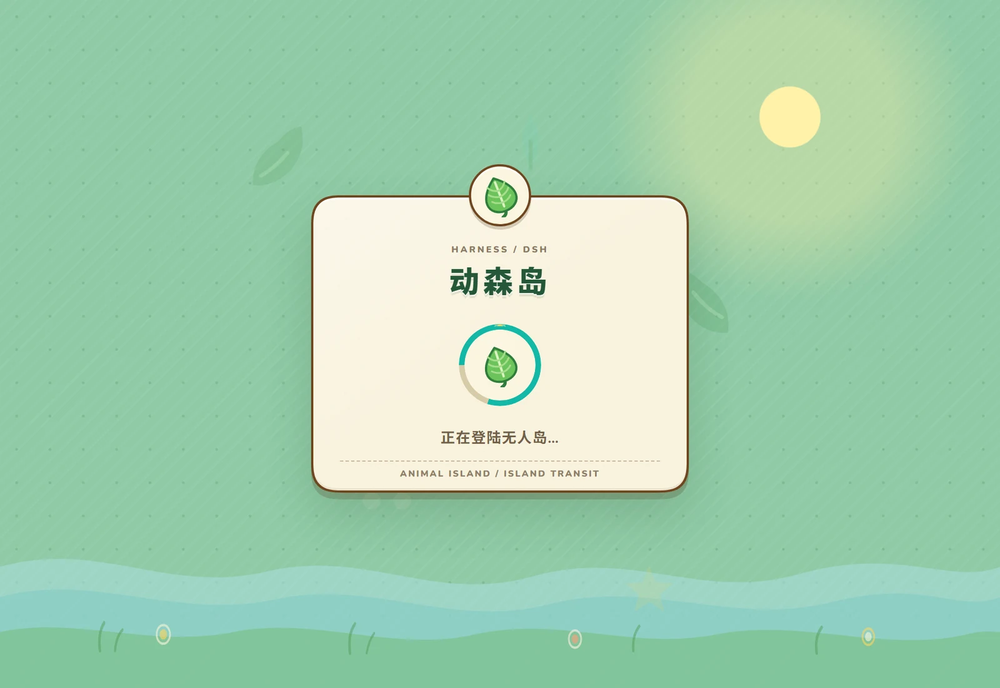

侧栏是一张渡岛船票
品牌区保留官方侧栏结构。工作区、会话、滚动和键盘操作仍由 DSH 原生组件负责。
主题只改看得见的颜色、材质和装饰，不接管会话逻辑。亮色像午后海岛，暗色则有星空、萤火与深蓝侧栏。


品牌区保留官方侧栏结构。工作区、会话、滚动和键盘操作仍由 DSH 原生组件负责。
边框、尾巴、纸纹和发送反馈都收在公开样式边界内，不挤压编辑器，也不重写布局。
夜间岛单独配色：暖棕纸面留在内容区，侧栏、星空和萤火换成另一套夜岛光影。
产品页里的画面都来自真实 DSH CSS/DOM 夹具。按钮、焦点、快捷键和滚动规则，仍按原生界面工作。
两套独立配色。不是给亮色加上一层黑。

纸白、均衡、海岛三档预设，也可以拖到 0.15–0.60 之间。

2px 内嵌薄荷环，在滚动与裁切容器里也完整可见。

等待页和失败页也共享同一套岛屿场景，不再像系统默认页。
不写 DSH hash class，不扫描 DOM，不合成点击。能力缺失时安全降级，原生界面继续工作。
查看兼容边界主题坐在 DSH 公开接口上。色彩、自有画面和官方 Slot 各做一件事，没有私有补丁。
118 个语义 token 映射亮暗主题，并跟随系统主题切换。
样式、Nunito 与原创岛屿资源由插件创建，也能成对清理。
只替换公开品牌和 Hero 区，官方侧栏根组件与行为保持原位。
从亮色船票到夜岛星空，再到安装和启动。视频只使用真实界面画面。
主题是插件，不是 DSH 分叉。你仍然在原来的客户端里工作，只是换了一套界面。
不会主动接管。主题只使用 ThemeRuntime、公开 Slot 和自己的 CSS；缺失能力时会安全退出这一层，不阻塞原生 GUI。
支持，但两端使用不同的 DSH profile。Web 和桌面端需要各自安装，桌面端的透明标题栏与截图调试见仓库文档。
不是。夜间岛有独立的暖棕内容面、深蓝侧栏、月光和萤火层，文本与状态色也分别校准。
画布浓度保存在当前客户端的 localStorage。它不会写入会话或工作区，Web 与桌面端各自记忆。
从 GitHub Releases 下载 .tgz 和 SHA256SUMS，校验后通过 pnpm add file: 安装到目标 profile，再完整重启 DSH。